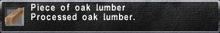

Level 75 reference · Zenith rules

Statistics
Piece of Oak Lumber
Processed oak lumber.
Stackable: 12
|
Other Uses
Guild Points Value: None
NPC Sell Price: ~805 gil
|
Synthesis Recipes
|
Used in Recipes
- Adargas - Leathercraft (79), Smithing (
 ), Goldsmithing (45) ), Goldsmithing (45)
- Bay Aquarium - Woodworking (89), Alchemy ()
- Beetle Knife - Bonecraft (59)
- Beverage Barrel - Woodworking (67), Cooking ()
- Black Adargas - Leathercraft (76), Smithing (), Goldsmithing ()
- Cabinet - Woodworking (81)
- Cermet Knife - Alchemy (62)
- Darksteel Axe - Smithing (62), Woodworking ()
- Darksteel Knife - Smithing (53)
- Darksteel Knuckles - Smithing (60), Woodworking (23)
- Darksteel Tabar - Smithing (83), Woodworking ()
- Exorcismal Oak Lumber - Woodworking (35)
- Freshwater Aquarium - Woodworking (80), Alchemy (36)
- Heavy Axe - Smithing (41), Woodworking ()
- Kamayari - Woodworking (53), Smithing (41)
- Maul - Smithing (46)
- Mythril Kukri - Smithing (42)
- Nadziak - Smithing (93), Woodworking (), Goldsmithing ()
- Negoroshiki - Smithing (66), Woodworking (), Goldsmithing ()
- Nymph Shield - Woodworking (82)
- Oak Bed - Woodworking (49), Clothcraft (53)
- Oak Cudgel - Woodworking (41)
- Oak Pole - Woodworking (55)
- Oak Shield - Woodworking (48), Smithing ()
- Oak Staff - Woodworking (44)
- Oak Table - Woodworking (40)
- Reef Aquarium - Woodworking (), Alchemy ()
- Revenging Staff - Woodworking (66)
- River Aquarium - Woodworking (79), Alchemy ()
- Round Shield - Woodworking (74), Smithing ()
- Saltwater Aquarium - Woodworking (88), Alchemy ()
- Scutum - Smithing (59)
- Tanegashima - Smithing (54), Woodworking (30), Goldsmithing ()
- Tower Shield - Woodworking (80), Goldsmithing (11)
- Traversiere - Woodworking (37)
- War Bow - Woodworking (58), Alchemy (19)
- Water Barrel - Woodworking (71)
- Zamburak - Woodworking (43), Smithing (19)
|
|
|
Obtained From Desynthesis
|
How to Obtain
Merchants
Adapted from Eden Wiki: Oak Lumber · Contributors and history · CC BY-SA 4.0. Revision 47148. Layout, links and optional background text adapted for Zenith.